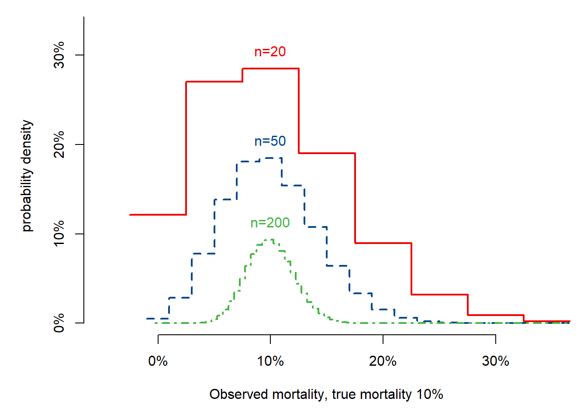
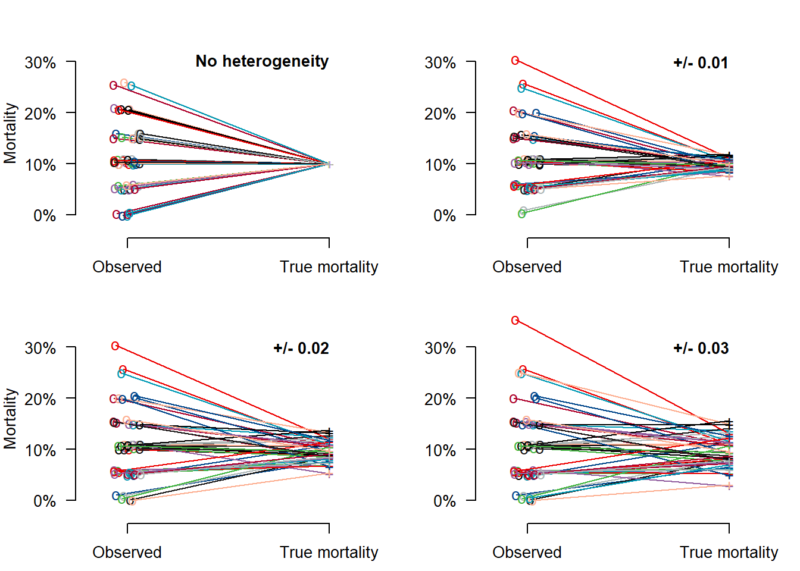
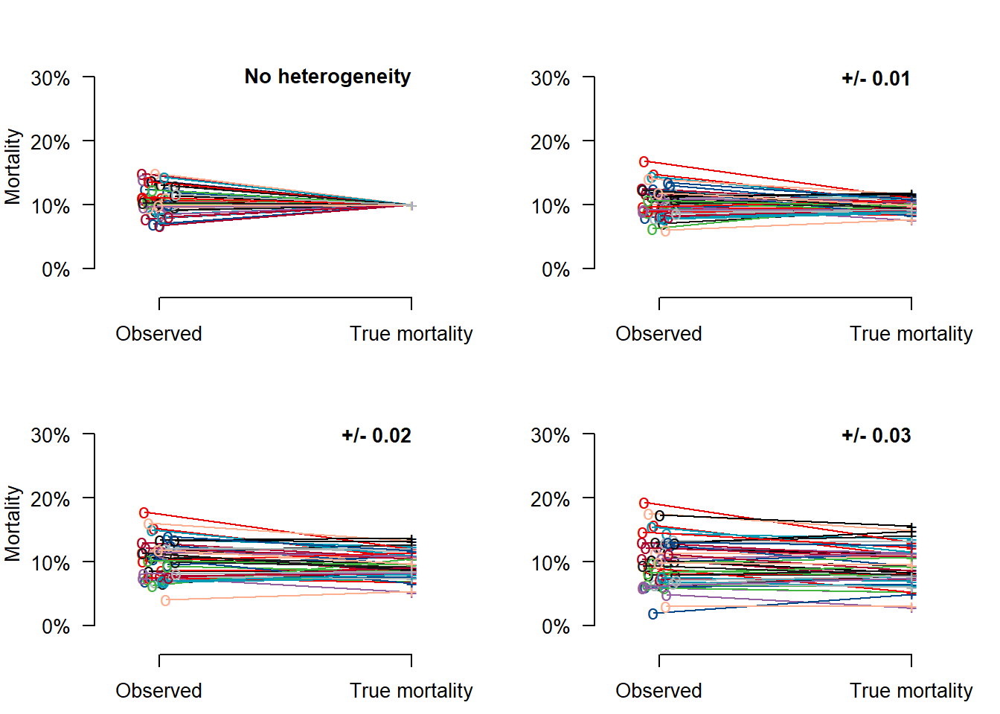

5 Overfitting and Optimism in Prediction Models
5.1 Figures 5.2 to 5.5
5.1.1 Fig 5.2: Noise in estimating 10% mortality per center
# Surg mortality; 10%
par(mfrow = c(1, 1), mar = c(5, 5, 1, 1))
for (mort in c(.1)) { ## ,0.05,0.02,.01)) { # 4 mortalities or only 1
plot(
x = seq(from = -.025, to = .975, by = .05), dbinom(x = 0:20, 20, mort), axes = F, type = "s", lwd = 2,
xlim = c(-.05, .35), ylim = c(0, .33), col = mycolors[2],
xlab = paste("Observed mortality, true mortality ", round(100 * mort, 0), "%", sep = ""), ylab = "probability density"
)
axis(side = 1, at = c(0, .1, .2, .3), labels = c("0%", "10%", "20%", "30%"))
axis(side = 2, at = c(0, 0.1, .2, .3, .4, .5, .6, .7), labels = c("0%", "10%", "20%", "30%", "40%", "50%", "60%", "70%"))
text(x = mort, y = .02 + dbinom(x = max(round(mort * 20), 0), 20, mort), labels = paste("n=20"), col = mycolors[2])
for (i in c(50, 200)) { # add more sample sizes
lines(
x = seq(from = 0 - (0.5 * 1 / i), to = 1 - (0.5 * 1 / i), by = 1 / i), dbinom(x = 0:i, i, mort),
type = "s", lty = ifelse(i == 50, 2, 4), lwd = 2, col = mycolors[ifelse(i == 50, 3, 4)]
)
text(x = mort, y = .02 + dbinom(x = max(round(mort * i), 0), i, mort), labels = paste("n=", i, sep = ""), col = mycolors[ifelse(i == 50, 3, 4)])
} # end loop n=50,200
} # end loop mort
## End Fig 5.2 #### function for Fig 5.3 and Fig 5.4: Noise vs Heterogeneity
illustrate_noise_heterogeneity <- function(n = 20, mort = 0.1, tau = c(0, .01, .02, .03)) {
par(mfrow = c(2, 2), pty = "m", mar = c(2.5, 4, 1.5, 1))
# Make data set with 100 centers, each 20 patients, 10% mortality, variability sd 0 to 0.03
seedn <- 102
set.seed(seedn)
ncenter <- 50
nsubjects <- n # n can be changed
# simple SD used on probability scale, can be improved upon
for (sdtau in tau) { # set for tau can be changed
truemort <- rnorm(n = ncenter, mean = mort, sd = sdtau) # mort can be changed
mortmat <- as.matrix(cbind(1:ncenter, sapply(truemort, FUN = function(x) rbinom(n = 1, nsubjects, x)) / nsubjects, truemort))
# Start plotting
plot(x = 0, y = 0, pch = "", xlim = c(-.2, 1.2), ylim = c(-.03, .35), axes = F, xlab = "", ylab = ifelse(sdtau == 0 | sdtau == .02, "Mortality", ""))
axis(side = 2, at = c(0, .1, .2, .3), labels = c("0%", "10%", "20%", "30%"), las = 1)
axis(side = 1, at = c(0, 1), labels = c("Observed", "True mortality"))
text(x = 1, y = .3, ifelse(sdtau == 0, "No heterogeneity",
ifelse(sdtau != 0, paste("+/-", sdtau))
), cex = 1, adj = 1, font = 2)
for (i in (1:ncenter)) {
set.seed(i + seedn)
lines(
x = c(0 + runif(1, min = -.07, max = .07), 1),
y = c(mortmat[i, 2] + runif(1, min = -.001, max = .01), mortmat[i, 3]), col = mycolors[rep(1:10, 10)[i]]
)
set.seed(i + seedn)
points(
x = c(0 + runif(1, min = -.07, max = .07), 1),
y = c(mortmat[i, 2] + runif(1, min = -.001, max = .01), mortmat[i, 3]), pch = c("o", "+"), col = mycolors[rep(1:10, 10)[i]]
)
}
}
} # end function that illustrates the impact of noise (determined by n) vs heterogeneity (determined by sdtau)5.1.2 Figs 5.3 and 5.4
These plots llustrate the impact of noise (determined by n, 20 or 200) vs heterogeneity (determined by sdtau (0 - 0.03)). With small n, such as n=20 per center, mortality such as 10% cannot be estimated reliably. Reliable estimation of a center’s performance requires a large n, such as n=200.
5.1.3 n=20

5.1.4 n=200
